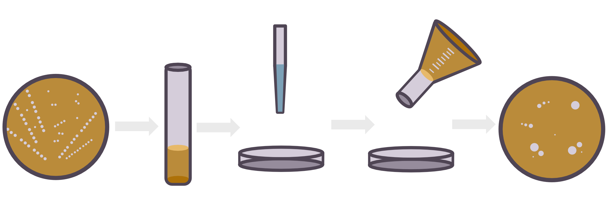

What is Candida?
Albicans, or C. Albicans, is a dimorphic fungus. That means that it occurs in two different forms.
This means that Candida is like a peacock. The male and the female are both very different from one another however they are still the same species.
Where Is It Found?
Candida can be commonly found in the oro-pharyngeal cavity, gastrointestinal tract, genitourinary tract, and skin of humans and other warm-blooded animals.
It functions as an opportunistic pathogen, meaning that it requires a condition not normally available to able to manifest, and is the most common cause of fungal infections in humans.
"I used to not believe in Humans... Until I found a way to filament from them."
Why Does It Matter?
Candida’s presence in Humans is generally harmless. However, as it is an opportunistic pathogen, its colonization has the possibility of leading to diseases, especially in instances of immune suppression. These diseases can range from mucosal infections, like oral thrush, to severe ones such as candidemia (candida infection of the bloodstream). The diseases caused by the invasion of Candida Albicans, while immunocompromised, can be quite lethal. The most severe of the diseases carries a mortality rate of 30 - 50%.
Being one of the most common fungal diseases in humans, it is important to understand the triggers for candida filamentation and deal with them accordingly.
"It can cause diseases!"
"It can cause infections!"
"It can colonize you!"
How Does It Do It?
The ability of C. albicans to invade its host is in part due to its dimorphic nature. It has the ability to grow as ovoid yeast or as elongated hyphae. Infection of tissues is attributed to the transition from the colonizing yeast form to the invasive hyphal form. This transition of C. albicans from yeast to hyphae is known as filamentation.
The Research
While it is know that C. albicans can transition to this invasive form in response to a number of external cues, the exact underlying mechanisms are not well characterized.
The following research, done by PhD candidate Ashlee Junier, is interested in contact-dependent filamentation, more specifically the ways in which iron-regulation is related to this filamentation pathway.

The Experiment
For the experiment, cells from frozen stock plates are prepared and grown overnight. They are later diluted and grown again for 4 hours, a small portion of these are placed in a petri dish and warm agar is poured on them and then swirled to distribute the cells evenly. The dishes are left to cool down until they solidify, before being put in an incubator to form colonies.
After 3-4 days in the incubator, the plates are ready to be “counted” for filamentation. Each plate has 100 of its colonies counted, and if any one colony has more than 20 filaments it gets added towards the filamentation percentage.

Initial Results
Current results have shown that colonies with a higher iron concentration show more filamentation than colonies with low iron concentration, indicating a correlation between iron concentration and Candida's ability to filament.
Where Are We Now?
Nothing is conclusive about Candida Albicans yet. Science is constantly reevaluating itself and as more research is performed in the field there is more to learn. The research showcased hopes to illuminate a better understanding about Candida Albicans and by doing so it may be applied in finding ways to apply prevent and manage filamentation.